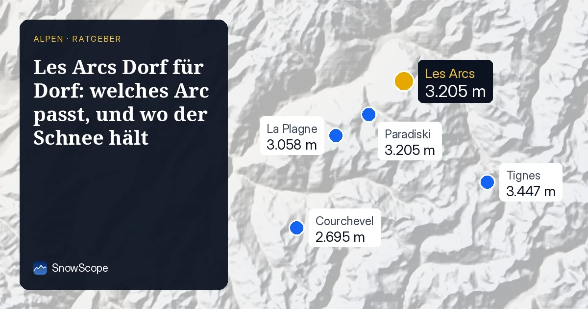

Les Arcs Dorf für Dorf: welches Arc passt, und wo der Schnee hält
Les Arcs erstreckt sich über einen Berg in vier zweckmäßig gebauten Dörfern, gestaffelt nach Höhe über Bourg-Saint-Maurice. Wo du übernachtest, prägt deine ganze Woche: wie viel Schnee vor deiner Tür liegt, wie du hinkommst, und welche Pisten dich jeden Morgen erwarten. Die Wahl ist nicht offensichtlich und zählt mehr, als die meisten denken.
Die Live-Schneeprognose für Les Arcs in der SnowScope-AppSchneehöhen, Pulverschnee-Alarme und 3D-Karte, gratis.

Arc 1600: der leichte Einstieg
Arc 1600 eröffnete 1968 und bleibt das einfachste Dorf ohne Autofahrt zu erreichen. Die Standseilbahn Arc en Ciel, 1986 gebaut, braucht etwa 7 Minuten vom Bahnhof Bourg-Saint-Maurice. Für Familien per Zug oder wer einen kurzen Transfer der Höhe vorzieht, kann das die Entscheidung schon treffen.
Auf 1.222 m sitzt Arc 1600 am Fuß des Bergs und fängt am wenigsten Schnee. In der Bilanz von 46 Wintern liegt die typische Maximaltiefe hier etwa 84 cm. Dagegen haben nur zwei Wochen pro Winter hier mindestens 50 cm. Die Abfahrten ins Dorf tauen auch zuerst auf. Bleibst du hier, plane deine Off-Piste und anspruchsvollen Hänge für Januar und Februar, wenn der Schnee am tiefsten ist.

Arc 1800: die Kompromisshöhe
Arc 1800 eröffnete 1974 als zweites Dorf und passt zu wem die Mittelhöhe reizt, ohne sich auf Höhe festzulegen. Die Position liegt zwischen Basis und unserem Referenzpunkt, daher wird die Schneedecke mit der Saison zuverlässiger. Der Dezember bringt oft bescheidene Bedeckung, ab Januar wird das Schneepaket dann stetig dicker.
Das Dorf passt Gruppen, die auf Zugang oder Schneesicherheit nicht verzichten wollen. Die Abfahrten ins Dorf leiden aber früh im Frühjahrsauftau. Fällt dein Urlaub in März oder später, ist höher besser.
Arc 1950 und Arc 2000: die Hochschneedörfer
Arc 2000 eröffnete 1979, Arc 1950, meist Residenzen, kam 2008. Beide liegen nahe 2.213 m, unserem Referenzpunkt, wo das Schneebild völlig dreht. Der Dezember bringt durchschnittlich etwa 68 cm, Januar etwa 115 cm, Februar etwa 150 cm, März etwa 160 cm, mit typischem Maximum um 191 cm übers ganze Jahr. In dieser Höhe halten neun von zehn Wintern mindestens 50 cm für volle 21 Wochen. Das ist zehnmal länger als auf Arc 1600.
Die Dörfer kürzen auch die Strecke zur Aiguille Rouge, dem höchsten Gipfel, und zur Olympia-Rennstrecke von 1992. Ganz oben in der Domain bei etwa 3.205 m liegt das übliche Maximum bei etwa 379 cm, und April wird tiefster Monat mit etwa 315 cm. Prägt Schneesicherheit deine Wahl, gehörst du zu Arc 1950 oder Arc 2000.
Höhe als deine Sicherheit
Die 46 Winter zeigen klares Muster: Schnee wächst steil mit der Höhe. Am Fuß sah der schlechteste Winter 48 cm, der beste 124 cm. In Mittelhöhe waren das 142 cm bis 271 cm. Oben spannten sie sich von 288 cm bis 552 cm. Besuchst du in unsicheren Jahren oder früh in der Saison, bieten höhere Dörfer viel mehr Sicherheit.
Letzter Winter, 2025-26, zeigte, wie es wirkt. Am Fuß lag das Maximum bei 100 cm, in Mittelhöhe erreichte es 212 cm, oben 342 cm. Ein Fahrer auf Arc 1600 hatte den halben Schnee von einem auf Arc 2000, selbst auf gleichem Berg.
Paradiski: deinen Berg erweitern
Seit Dezember 2003 verbindet die Seilbahn Vanoise Express Les Arcs mit Peisey-Vallandry und La Plagne und bildet Paradiski mit etwa 425 km Pisten. Bei einer Woche Aufenthalt reichen oft ein, zwei Paradiski-Tage, um Optionen zu verbreitern, ohne Mehrgebiet-Pass zu kaufen. Die Hochgebirgskabine selbst ist ein Erlebnis.
Ein Hinweis: Der Hochgebirgsübergang schließt bei Wind oder schlechter Sicht. Plane denen Paradiski-Tag bei ruhigem Wetter und check die Bedingungen vorher.
Wie der Schnee trended
Die Langzeitbilanz zeigt Verschiebung. In den ersten 15 Wintern ab 1980-81 lag das typische Maximum in Mittelhöhe (2.213 m) um etwa 212 cm und das Gebiet sah Schnee am Boden etwa 256 Tage. In den letzten 15 Wintern bis 2025-26 fielen die Zahlen auf etwa 182 cm und 226 Tage. Schneetage schrumpften um etwa einen Monat in vier Jahrzehnten.
Der Trend bedeutet: höhere Dörfer schützen mehr vor dünnen Winters der Zukunft. Letzter Winter brach das jüngste Muster mit soliden 212 cm in Mittelhöhe, aber auf höhere Höhe zu setzen bleibt klüger.
Tipps für Skifahrer
- Per Zug angekommen: Die Standseilbahn zu Arc 1600 spart einen Straßentransfer, bringt aber den dünnsten Schnee. Plane Steilhänge oder Off-Piste für Januar oder Februar, wenn die Basis tiefer ist.
- Für zuverlässigsten Schnee über deinen ganzen Aufenthalt: wähle Arc 1950 oder Arc 2000. In dieser Höhe halten 9 von 10 Wintern guten Schnee 21 Wochen oder länger.
- Buche einen Paradiski-Tag nur, wenn die Prognose oben ruhig und klar ist. Wind schließt die Kabine regelmäßig.
- Lies das Lawinenbulletin von Météo-France jeden Morgen vor jeder Off-Piste-Abfahrt, egal in welchem Dorf.
- Check die Liftöffnungen auf der Resort-Website vor der Buchung. Schnee auf unserer Karte bedeutet nicht, dass das Resort fährt.
Zu diesen Zahlen
Die Schneehöhen der Skigebiete sind der meiste Schnee in den oberen Hängen am angegebenen Tag; es sind Schätzungen für eine Fläche, keine Messung an einem Punkt. Prognosen können sich ändern. Lies vor dem Freeriden immer den offiziellen Lawinenlagebericht.
Offizielle Lawinenlageberichte: Météo-France BERA
Diesen Bericht zitieren
Für Forschung, Lehre oder Presse: Zahlen und Grafiken sind unter CC BY 4.0 mit dieser Quellenangabe frei nutzbar.
SnowScope (2026), Les Arcs Dorf für Dorf: welches Arc passt, und wo der Schnee hält, https://snowscope.app/blog/de/2026/11/les-arcs-village-by-village-snow-paradiski.html, abgerufen am 2026-11-09
SnowScope (Atlas Labs). (2026, November 9). Les Arcs Dorf für Dorf: welches Arc passt, und wo der Schnee hält. SnowScope snow reports. https://snowscope.app/blog/de/2026/11/les-arcs-village-by-village-snow-paradiski.html
BibTeX
@misc{snowscope2026lesarcsvillagebyvillages,
author = {{SnowScope (Atlas Labs)}},
title = {Les Arcs Dorf für Dorf: welches Arc passt, und wo der Schnee hält},
year = {2026},
month = nov,
howpublished = {\url{https://snowscope.app/blog/de/2026/11/les-arcs-village-by-village-snow-paradiski.html}},
note = {Published 2026-11-09 18:59 UTC; accessed 2026-11-09}
}· CC BY 4.0 · Methoden, Daten und Werkzeuge →
Les Arcs: Schnee und Temperatur nach Höhe, dieser Winter vs letzter (Werkzeuge) →
Les Arcs folgen
Gratis: eine Nachricht, wenn Neuschnee kommt, und jeden Morgen die Vorhersage.